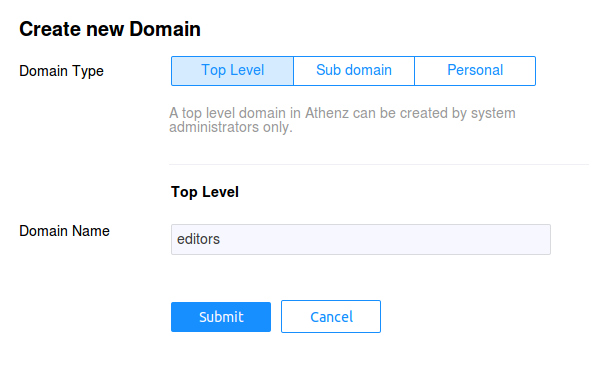
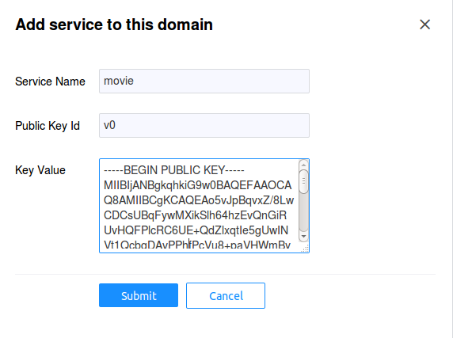
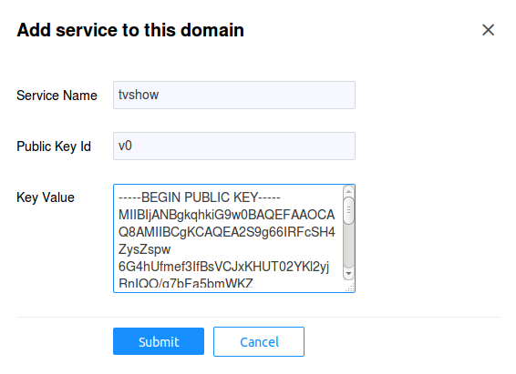
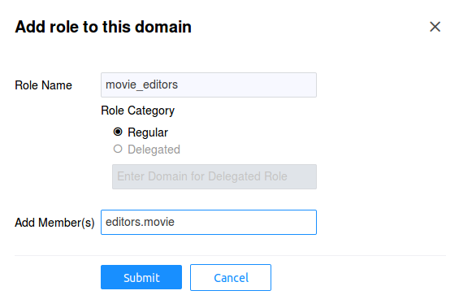
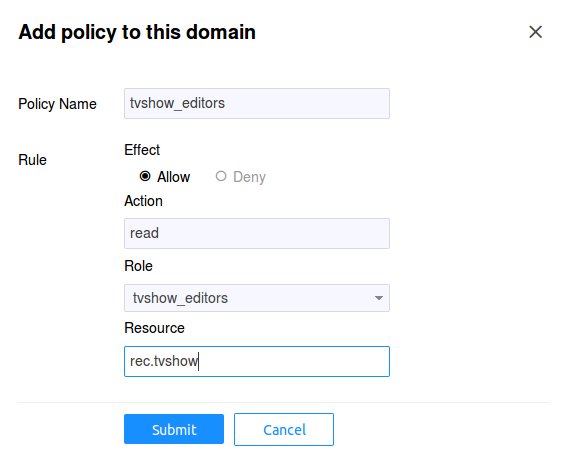
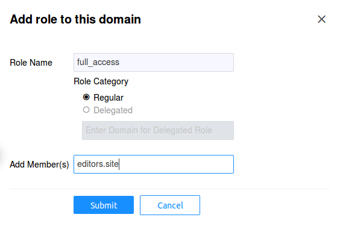
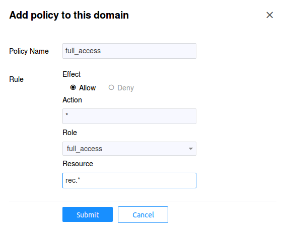

Example Service Access Control Setup
We've decided that our resources for the service will be defined in Athenz as:
rec.movie
rec.tvshow
and the only supported action for now would be read. Now we can
create their respective client and server (also commonly referred
as tenant and provider) roles and policies in Athenz. Go to
Athenz UI and login with your account which should have system
administrator access.
Client (Tenant) Domain
The client services will be defined in the editors domain so
let's create that domain and services. Click on the
Create a domain link in top left corner to add the domain:

Movie Editors
Each service is identified by its private/public key pair. The
movie service will be authorized to access the /rec/v1/movie
endpoint from our recommendation service. So we
need to first generate the key pair (at the end we're going to
display the contents of the public key since we'll be using that
when creating the service in the UI):
$ openssl genrsa -out movie_private.pem 2048
$ openssl rsa -in movie_private.pem -pubout > movie_public.pem
$ cat movie_public.pem
Now we need to register the movie service in the editors domain.
After you login, click on the editors domain in the left hand
tree pane, then choose the Services tab. Click on the
Add Service button. In the Key Value field when creating a
service, enter the contents of the movie_public.pem file.
For the Public Key Id field we'll use v0. Each service
can be identified my multiple key pairs. For example, if you
have services running in different geographical data centers,
each data center instance can have its own unique public/private
key pair. It also allows the service administrator to establish
a key rotation policy - e.g. generate a new key pair every 6
months and assign a new key identifier: v0, v1, etc.

TvShow Editors
The tvshow service will be authorized to access the /rec/v1/tvshow
endpoint from our recommendation service. So again, we
need to first generate the key pair (at the end we're going to
display the contents of the public key since we'll be using that
when creating the service in the UI):
$ openssl genrsa -out tvshow_private.pem 2048
$ openssl rsa -in tvshow_private.pem -pubout > tvshow_public.pem
$ cat tvshow_public.pem
Now we need to register the tvshow service in the editors domain.
After you login, click on the editors domain in the left hand
tree pane, then choose the Services tab. Click on the
Add Service button. In the Key Value field when creating a
service, enter the contents of the tvshow_public.pem file.
For the Public Key Id field we'll use v0. See the
Movie Editors section for additional details on this field.

Site Editors
The site service will be authorized to access both /rec/v1/movie
and /rec/v1/tvshow endpoints from our recommendation service. So we
need to first generate the key pair (at the end we're going to
display the contents of the public key since we'll be using that
when creating the service in the UI):
$ openssl genrsa -out site_private.pem 2048
$ openssl rsa -in site_private.pem -pubout > site_public.pem
$ cat site_public.pem
Finally, we need to register the site service in the editors domain.
After you login, click on the editors domain in the left hand
tree pane, then choose the Services tab.Click on the
Add Service button. In the Key Value field when creating a
service, enter the contents of the site_public.pem file.
For the Public Key Id field we'll use v0. See the
Movie Editors section for additional details on this field.

Service View
Once all three services are successfully registered, you should
have the following Services view for the editors domains:

Server (Provider) Domain
The recommendation service will be run by recommend property.
So let's first create this domain in Athenz. Click on the
Create a domain link in top left corner to add the domain:

Authorization Roles and Policies
Typically since we have two resources and only one action supported in this use case, we'll be creating 2 roles that will be providing access control. In this model, if we want one service to have access to both services, we'll need to add that principal to both roles. A slightly different approach would be to create yet another role that provides full access to all recommendation endpoints.
Movie Access
First we need to create the role that includes principals
authorized to access the movie resource. In our example, we'll
call this role as movie_editors and include editors.movie
service as a member of this role. After you login, click on
the recommend domain in the left hand tree pane, then choose
the Roles tab. Click on the Add Role button:

Now we need to give access to this role with action read to
resource rec.movie. Choose the Policies tab and click on
the Add Policy button:

TvShow Access
Now we need to create the role that includes principals
authorized to access the tvshow resource. In our example, we'll
call this role as tvshow_editors and include editors.tvshow
service as a member of this role. After you login, click on
the recommend domain in the left hand tree pane, then choose
the Roles tab. Click on the Add Role button:

Now we need to give access to this role with action read to
resource rec.tvshow. Choose the Policies tab and click on
the Add Policy button:

Full Access
Finally, we need to create the role that includes principals
authorized to have full access to any resource in our
recommendation service. In our example, we'll call this role
as full_access and include editors.site service as a member
of this role. After you login, click on the recommend domain
in the left hand tree pane, then choose the Roles tab. Click
on the Add Role button:

Now we need to give access to this role with action * to
resource rec.*. Since Athenz support glob style wildcards,
having * indicates it will match all actions - e.g. read,
write, etc. And having the resource as rec.* indicates that
it will match rec.movie, rec.tvshow and any other resource
that we create with the prefix rec.. Choose the Policies tab
and click on the Add Policy button:
